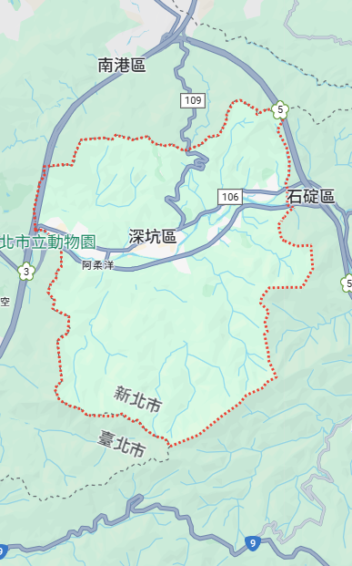

<div class="map-screen">
        
        <!-- 背景地圖 (請輸入圖片路徑) -->
        

        <!-- [新增] 1. 左上角返回按鈕 -->
        <!-- 樣式已在 style.css 定義過，會自動變成圓形白底並定位在左上 -->
        <button class="back-btn">
            <i class="fas fa-chevron-left"></i>
        </button>

        <!-- [新增] 2. 右上角使用者頭像 -->
        <div class="map-avatar-wrapper">
            <div class="user-avatar">
            <!-- 圖片路徑請依需求修改 -->
            
            </div>
        </div>
        <!-- Header Buttons -->
        <div class="back-btn-container">
            <button class="back-btn" id="mapBackBtn"><i class="fas fa-chevron-left"></i></button>
        </div>
        <div class="user-avatar-container">
            
        </div>

        <!-- 4個地點按鈕 -->
        <div class="location-btn pos-a" data-id="A" data-title="1792 茶園"><span class="btn-label">A</span></div>
        <div class="location-btn pos-b" data-id="B" data-title="金城茶園"><span class="btn-label">B</span></div>
        <div class="location-btn pos-c" data-id="C" data-title="深坑有好茶園"><span class="btn-label">C</span></div>
        <div class="location-btn pos-d" data-id="D" data-title="來深坑喝茶園"><span class="btn-label">D</span></div>

        <!-- === 互動視窗 (Modal) === -->
        <div class="modal-overlay" id="teaModal">
            <div class="modal-card">
                <!-- 標題與敘述 -->
                <div class="modal-title" id="modalTitle">茶園標題</div>
                <div class="modal-desc">
                    這裡是一段關於該茶園的簡短描述，介紹特色與環境。<br>
                    ru03ruk3ndklndlkcndkncdknd...
                </div>

                <!-- 環形計時器 -->
                <div class="timer-wrapper" id="timerArea">
                    <div class="timer-circle">
                        <div class="timer-text">
                            <div><span class="timer-val" id="displayHr">1</span> <span class="timer-unit">hr</span></div>
                            <div><span class="timer-val" id="displayMin">20</span> <span class="timer-unit">mins</span></div>
                        </div>
                        <!-- 旋轉的操縱桿容器 -->
                        <div class="knob-container" id="knobRotator">
                            <div class="knob"></div>
                        </div>
                    </div>
                </div>

                <!-- 茶種區塊 -->
                <div class="tea-section-title">可能獲得的茶種</div>
                <div class="tea-dots-container">
                    <div class="tea-dot"></div>
                    <div class="tea-dot active"></div>
                    <div class="tea-dot"></div>
                    <div class="tea-dot"></div>
                    <div class="tea-dot active"></div>
                    <div class="tea-dot"></div>
                    <div class="tea-dot active"></div>
                </div>

                <!-- 輸入框 -->
                <input type="text" class="goal-input" placeholder="設定專注目標 (選填)">

                <!-- 按鈕 -->
                <button class="enter-btn">進 入 茶 園</button>
            </div>
        </div>

    </div>
